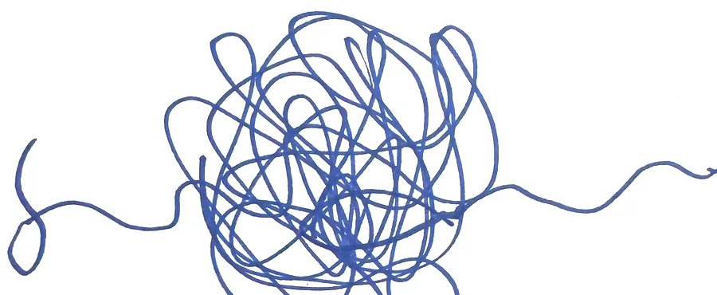
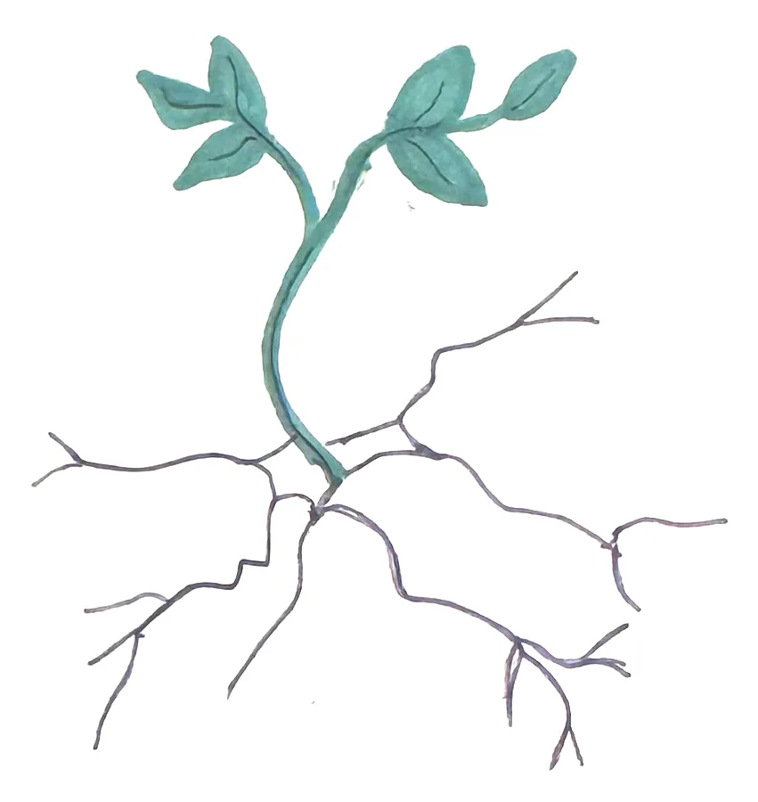
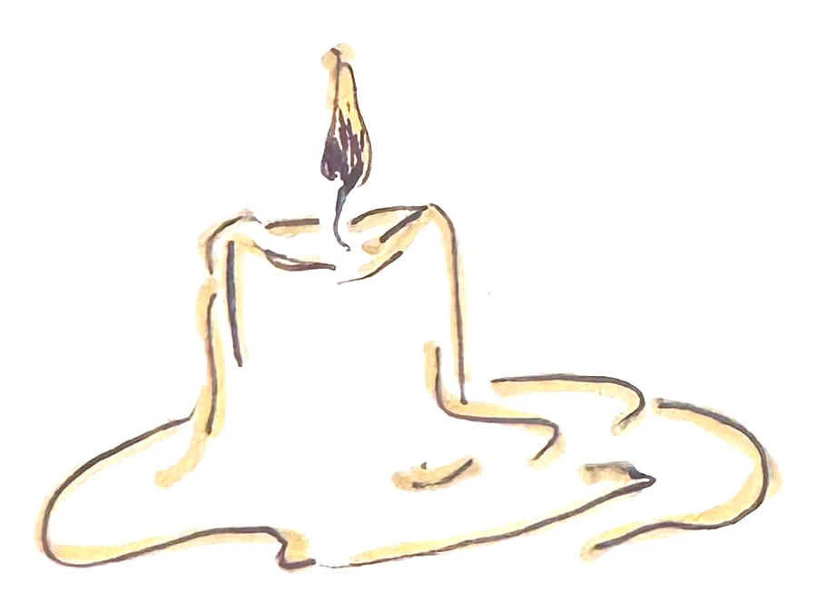
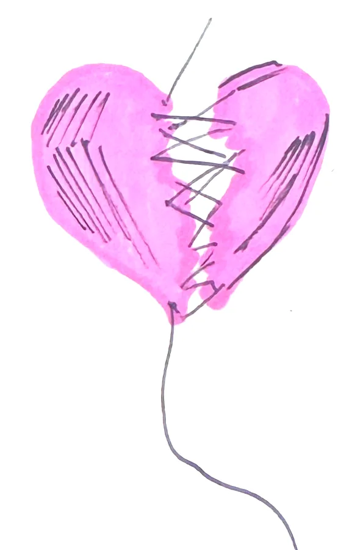
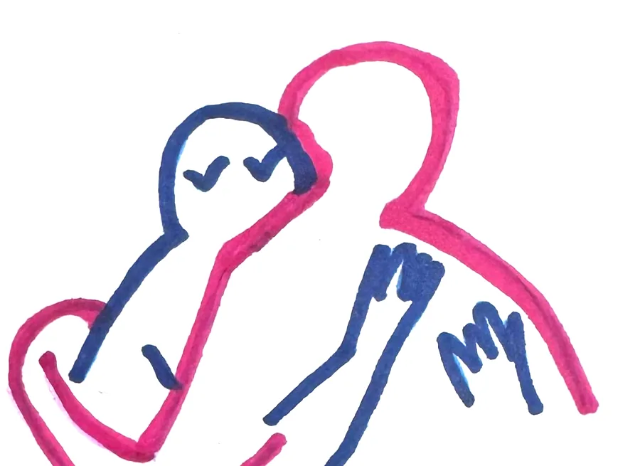
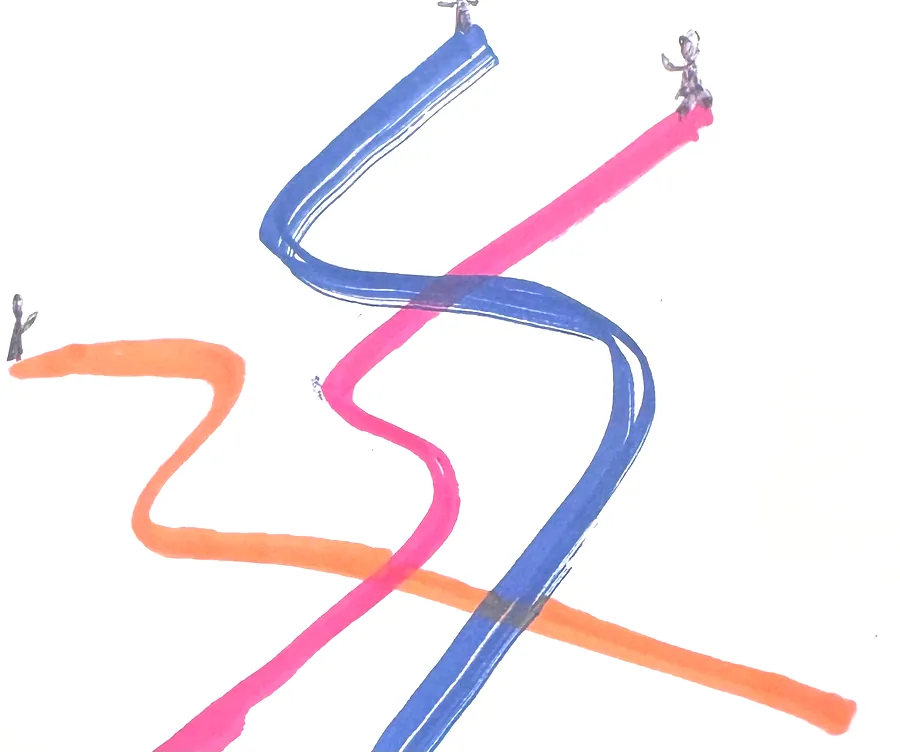
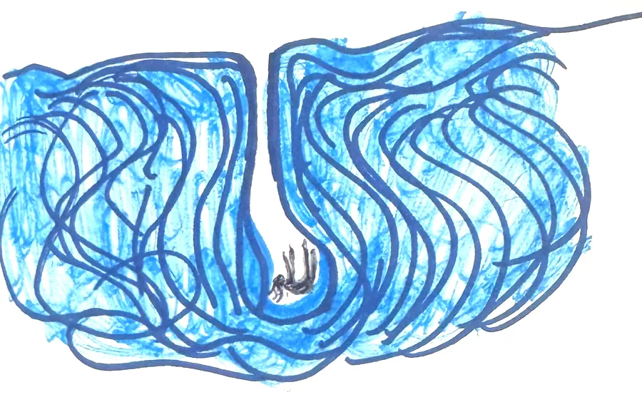

Мария Добрицкая — психолог в Санкт-Петербурге и онлайн
Я — не то, что со мной случилось. Я — то, чем я решаю стать
Записатьсякоротко о главном
Помогаю вернуть управление собственной жизнью. С теплом и с опорой на научные знания о психике и поведении: меняем привычные паттерны, учимся управлять тревогой, выдерживать сложные чувства и совершать выбор в пользу жизни, которая по-настоящему ваша!
Схема-терапия, ACT, CFT 5 лет практики
С чем можно прийти
-

Тревога
тревожные расстройства: ГТР, ОКР
-

Самооценка
«со мной что-то не так»: неуверенность в себе, чувства стыда и вины
-

Депрессия и выгорание
потеря смыслов, чувство бессилия и безысходности
-

Травматичный опыт
детский опыт, сексуализированное насилие, КПТСР
-

Проблемы в отношениях
романтические, семейные, дружеские, детско-родительские
-

Кризисы
поиск идентичности, самореализация
-

ПРЛ
пограничное расстройство личности
Необязательно знать точный запрос. Достаточно сказать: «что-то не так», и вместе разберёмся!
- Кому помогаю
- Взрослым от 18 лет. Родителям — по вопросам взаимодействия с ребёнком.
- С кем не работаю
- С людьми с химическими зависимостями.
- Подходы
- Схема-терапия, ACT, CFT
- Опыт
- 5 лет
- Документы об образовании
Обо мне
Искренне восхищаюсь людьми, которые готовы попробовать изменить свою жизнь, как бы страшно и уязвимо это ни было.
Работаю бережно, эффективно и с юмором. Для меня важны безопасность и прозрачность процесса: я открыто объясняю, что и зачем мы делаем, и сверяюсь с вашей готовностью на каждом этапе. Верю, что настоящие изменения и рост возможны в атмосфере принятия.
Будем и плакать, и смеяться, и решать ваши проблемы вместе!
Услуги и цены
Все консультации — 55 минут, 5 000 ₽.
оплата — после встречи
-
Записаться →
Индивидуальная консультация онлайн
В Zoom или Контур.Толк, по всему миру.
-
Записаться →
Индивидуальная консультация очно
Кабинет в Санкт-Петербурге, м. Невский проспект, ул. Думская, 5/22.
-
Записаться →
Консультация для родителей
Педагогическая консультация по вопросам взаимодействия с ребёнком.
Как проходит работа
маршрут к первой встрече
-
01
Вы пишете в Telegram
Пары строк достаточно.
-
02
Выбираем время
Договариваемся о дне и формате: очно или онлайн.
-
03
Первые встречи
Знакомимся и в первые встречи формулируем ваш запрос, сверяемся с ожиданиями от совместной работы.
-
04
Дальше решаем вместе
Рассказываю, какие есть варианты помощи, выбираем формат: краткосрочная или долгосрочная работа.
Можно бояться и всё равно идти.
записка для тех, кто сомневается
Вопросы
не нашли ответ —
напишите мне!
Как понять, что мне нужен психолог?
Если что-то беспокоит, мешает жить так, как вам подходит, или хочется разобраться в себе, этого достаточно, чтобы прийти. Вы и ваши переживания важны.
Я не знаю, что говорить на первой встрече
Это нормально, когда непонятно, с чего начать и что именно беспокоит. Я буду рядом и помогу сориентироваться.
Психолог или психиатр: к кому мне?
Психолог не назначает лекарства и работает разговорными методами. Психиатр — врач: ставит диагнозы и при необходимости назначает лечение. Если у меня возникнут сомнения насчёт вашего состояния, я открыто скажу об этом и порекомендую проверенных психиатров.
Всё, что я расскажу, останется между нами?
Да, всё, что происходит между нами, строго конфиденциально. Исключение — ситуации, угрожающие вашей жизни.
Сколько встреч понадобится?
Это зависит от запроса, который мы определим на первых трёх встречах. Я работаю и в краткосрочном, и в долгосрочном формате.
Как оплатить и что будет, если я отменю встречу?
Оплата — переводом на карту сразу после встречи. Отменить или перенести консультацию можно не позднее чем за сутки: напишите мне в Telegram. Если отменить позже, оплачивается 50% стоимости. Правило действует в обе стороны: если встречу отменяю я, на следующую консультацию вы получаете скидку 50%.
Запись
Напишите мне
Пары строк достаточно: как к вам обращаться и какой формат удобен — онлайн или очно. Отвечу и предложу время.
Записаться- Кабинет
- м. Невский проспект, ул. Думская, 5/22
- Онлайн
- Zoom или Контур.Толк, по всему миру